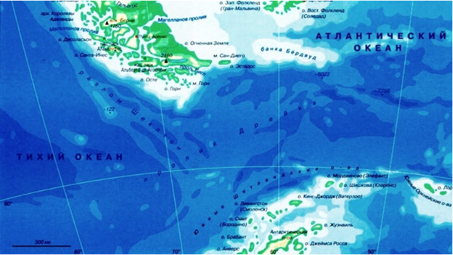

Самое штормовое место на Земле: почему пролив Дрейка — опаснейший путь в Антарктику
Даже грузовые суда предпочитают другой путь, если требуется обогнуть Южную Америку с юга. Лишь многотоннажные суда решаются на проход через пролив Дрейка. И дело не столько в айсбергах, которые здесь встречаются очень часто, сколько в невероятно сильных штормовых ветрах, которые дуют здесь всегда, независимо от сезона и времени суток. Но почему именно пролив Дрейка является одним из самых штормовых мест на планете?
Где находится пролив Дрейка?
Пролив Дрейка — это межконтинентальный пролив, соединяющий южные части Атлантического и Тихого океанов (в случае выделения Южного океана может полностью или частично относиться к нему). К северу от пролива расположена самая южная точка южноамериканского материка и всего американского континента — острова Диего-Рамирес (архипелаг Огненная Земля) и легендарный мыс Горн, а с противоположной стороны — Южные Шетландские острова (Антарктида). Является самым широким (из имеющих собственное название) проливом на Земле: в самой узкой части его ширина составляет не менее 820 км. Он же является и самым глубоким, с глубинами более 5000 м.
Мар-де-Осес, как на испанском языке называют пролив Дрейка, предположительно впервые встретил мореплавателя в начале 1500-х годов. Тогда известный испанский морской исследователь Франсиско де Осес отправился изучать южное направление: он стремился увидеть конец континента Южная Америка. Несколько десятилетий спустя известный британский исследователь, адмирал и морской капитан Фрэнсис Дрейк прошел этот пролив в 1578 году во время второго в мире после Магеллана кругосветного путешествия на единственном из оставшихся от своей многочисленной флотилии фрегате «Пеликан» (позднее переименованном в «Золотую Лань»), водоизмещением 150 тонн.
В итоге, пролив получил свое сегодняшнее название благодаря Шеклтону Эрнесту во время Имперской трансантарктической экспедиции в честь английского мореплавателя.
Дрейк был легендарной фигурой в британской экспансии, и именно от него произошло английское название пролива.
Испанцы, однако, считают его пиратом. И не просто так — Дрейк имел склонность захватывать их заполненные сокровищами корабли. Именно поэтому в большинстве испаноязычных источников по сей день пролив Дрейка все еще упоминается как Мар-де-Осес.
Сближение морей и кладбище кораблей
Через пролив проходит мощное Антарктическое циркумполярное течение. В проливе часты штормы, причём здесь они являются одними из самых сильных на планете — постоянный западный ветер, иногда достигающий 35 м/с (126 км/ч), сочетается с течением с запада на восток, местами достигающим скорости в 15 км/ч, также нередки волны высотой более 15 метров. Преимущественно в южной части пролива встречаются айсберги, движущиеся вслед за течением с запада на восток. В целом климат умеренный, в южной части переходящий в субантарктический.
Пролив Дрейка простирается чуть менее чем на 1000 км. В этом месте сходятся океаны.
Что делает пролив Дрейка таким печально известным? Мощнейшие течения на этой широте не встречают сопротивления ни с одной частью суши. В сочетании со склонностью этого района к сильному ветру, переход через пролив Дрейка может быть довольно авантюрным делом. К счастью, в настоящее время экспедиционные суда оснащены стабилизаторами, которые поглощают большую часть колебаний.
Исторически пролив является кладбищем значительного числа кораблей, которые пытались пройти его против течения и ветров со времён Магеллана и до открытия Панамского канала, который оттянул на себя практически все каботажные маршруты Южной Америки. Безопасное судоходство по проливу при относительно спокойной погоде возможно только для грузовых судов очень крупного водоизмещения (например, танкеров и контейнеровозов класса «Панамакс»), крупных военных кораблей (например, крейсеров и авианосцев), а также подводных лодок.
Почему это одно из самых опасных мест на планете?
Пролив Дрейка находится между Южной Америкой и Антарктидой, а если быть точнее, то между архипелагом Огненная Земля и Южными Шетландскими островами. Пролив обладает целым рядом характеристик, что делает его выдающимся на фоне всех остальных проливов Земли.
Пролив Дрейка — это самый широкий пролив на географической карте, а его ширина в самой узкой части составляет 820 километров. Также это самый глубокий пролив на планете, и когда морские суда проходят через него, то под ними бурлят 5 км воды. Также он отличается постоянными ветрами.
В южной части земного шара, между 40° и 50° южной широты проходит мощное Антарктическое циркумполярное океаническое течение, или течение Западных Ветров. Это течение, не встречая на своем пути препятствий в виде континентов или крупных островов, развивает значительную скорость. Поэтому всем судам, которые идут через пролив Дрейка из Атлантики в Тихий океан, приходится преодолевать мощное сопротивление Антарктического циркумполярного океанического течения, пишет Travelask.
Но течение не так страшно, как штормовые ветры. Здесь постоянно они нередко достигают 25-30 м/с, то есть находятся на отметке показателей 10-балльного шторма.
Помимо мощнейших ветров, обстановку в проливе существенно осложняют айсберги и дрейфующие льды. Южная часть пролива с апреля по ноябрь (а именно в это время в южном полушарии зима) покрыта льдом. Летом на юге пролива Дрейка часто плавают айсберги.
Экстремальное
пересечение
пролива Дрейка
Если говорить о судоходстве в этом проливе, то оно не сильно развито ввиду вышеназванных причин. После того, как был построен Панамский канал, большинство судов использует именно его для того, чтобы попасть из Атлантики в Тихий океан и обратно. Ну а если необходимо попасть именно в южную часть Южной Америки, обогнув ее с юга, то используют куда более спокойный и безопасный Магелланов пролив. По нему же проходят и многочисленные круизные лайнеры, следующие по маршрутам кругосветного плавания.
Однако в конце 2019 года команде из шести человек впервые в истории удалось на гребной лодке пересечь пролив Дрейка на обычной гребной лодке в конце 2019 года.
Участники экспедиции родом из США, Исландии, ЮАР и Шотландии. Путь, начавшийся с южной оконечности Южной Америки, занял у них тринадцать дней. Чтобы лодка не перевернулась, три человека должны были все время оставаться на вёслах, в то время как еще у троих была возможность отдохнуть в стесненных условиях девятиметрового судна.
Угрозу жизни представляли сильные ветра, 12-метровые волны и киты, которые могли легко перевернуть лодку. Как рассказал один из участников экспедиции, вода в проливе Дрейка настолько холодная, что при попадании за борт у человека остается на выживание от двух до пяти минут.
Помимо угрозы для жизни, мужчины работали в тяжелых условиях. Их 9-метровая гребная лодка под названием Ohana должна была находиться в постоянном движении, чтобы не опрокинуться. Это означало, что трое мужчин будут грести по 90 минут, в то время как трое других будут отдыхать, все еще холодные и мокрые.
«Вы гребете в открытом трюме, 40-футовые морские волны плещутся вам в лицо, почти ледяная вода попадает в нос», — рассказывает 34-летний Колин О’Брэди из Джексон-Хоул, штат Вайоминг, один из шести участников экспедиции.
«Это было довольно мучительно,— рассказал О’Брэди Associated Press в своем первом интервью после поездки — К концу мы все сильно похудели и были в бреду от недосыпания».
Самой сложной задачей для товарища по гребле О’Брэди, Джейми Дугласа-Гамильтона из Эдинбурга, Шотландия, были постоянные бомбардировки со стороны стихии.
«Мы были поражены ветрами со всех сторон … и море здесь очень сильное, ведь это самый бурный океан в мире — поделился 38-летний мужчина — Мы много раз почти опрокидывались, и проблема в том, что вода настолько холодная, что если вы упадете в неп, у вас есть от двух до пяти минут на то, чтобы выбраться».
Зачем ученые наблюдают и исследуют пролив?
На протяжении более 20 лет пролив Дрейка является наиболее тщательно наблюдаемой частью Южного океана. Он обеспечивает связь между Тихим и Атлантическим океанами и ограничивает Антарктическое циркумполярное течение (АЦТ) узким географическим регионом. В итоге, эир делает его лучшим местом для измерения свойств АЦП. С 1993 года каждое антарктическое лето проводятся высококачественные гидрографические измерения на полной глубине в проливе Дрейка. Эти межконтинентальные измерения уникальны: ни один другой океанский бассейн не имеет такого хорошего разрешения в течении такого долгого периода времени.
Объем воды, переносимой АЦТ, затмевает даже Гольфстрим. Именно поэтому даже небольшие изменения его свойств в будущем могут оказать глубокое влияние на остальные океаны мира. Чем больше у ученых будет записей об этом экстремальном месте, тем лучше будет их способность обнаруживать постепенные долгосрочные изменения в естественной изменчивости океана.

Южный океан не похож ни на один другой на планете из-за непрерывного плавания вокруг Антарктического континента. Это канал, по которому тепло и пресная вода, а также биогеохимические свойства переносятся между бассейнами Атлантического, Индийского и Тихого океанов. Он также играет важную роль в циркуляции океана за счет образования водных масс вокруг Антарктиды. Таким образом, это чрезвычайно важная часть глобальной системы океан-атмосфера-криосфера, которая одновременно очень чувствительна к климатическим воздействиям и активно участвует в них.